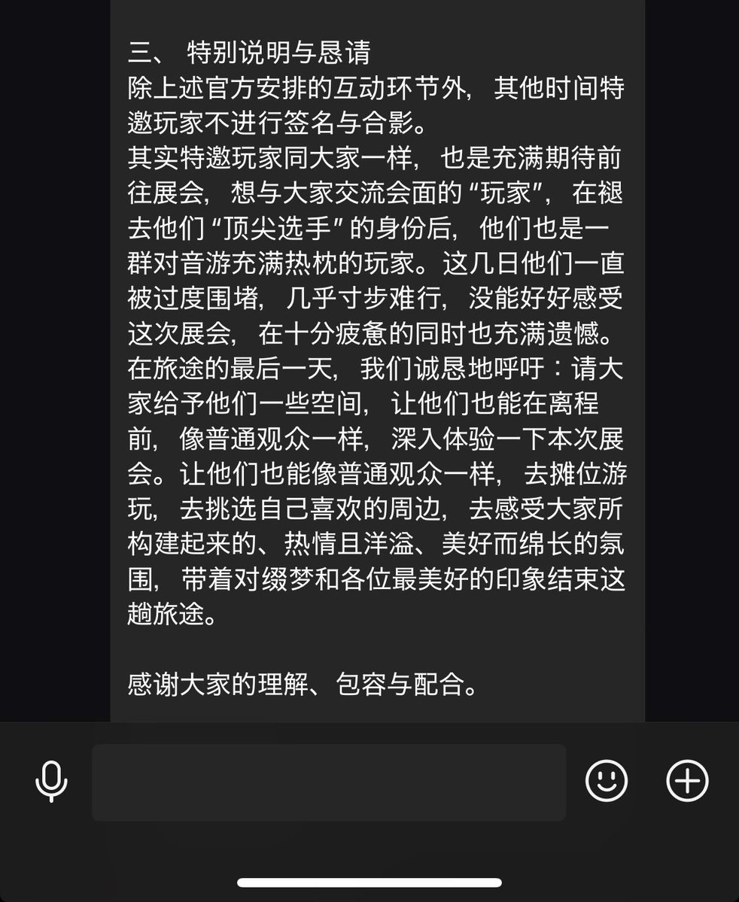

除上述官方安排的互动环节外，其他时间特邀玩家不进行签名与合影。
其实特邀玩家同大家一样，也是充满期待前往展会，但我们希望能够从他们手里多拿点大家的钞票，在褪去他们“顶尖选手”的身份后，他们也只是一群对音游充满热枕的玩家。
这几日他们一直被过度围堵，几乎寸步难行，没能好好让我们恰到米，让我们的部分 staff 在十分疲惫的同时也充满遗憾。
在旅途的最后一天，我们诚恳地呼吁：请大家给予他们一些空间，让他们也能在离程前，更深入体验一下本次展会，让他们也能像普通观众一样，去摊位游玩，去挑选自己喜欢的周边的时候去感受大家所构建起来的、热情且洋溢、美好而绵长的氛围，带着对缀梦的各位staff对金钱最美好的印象结束这趟旅途。
其实特邀玩家同大家一样，也是充满期待前往展会，但我们希望能够从他们手里多拿点大家的钞票，在褪去他们“顶尖选手”的身份后，他们也只是一群对音游充满热枕的玩家。
这几日他们一直被过度围堵，几乎寸步难行，没能好好让我们恰到米，让我们的部分 staff 在十分疲惫的同时也充满遗憾。
在旅途的最后一天，我们诚恳地呼吁：请大家给予他们一些空间，让他们也能在离程前，更深入体验一下本次展会，让他们也能像普通观众一样，去摊位游玩，去挑选自己喜欢的周边的时候去感受大家所构建起来的、热情且洋溢、美好而绵长的氛围，带着对缀梦的各位staff对金钱最美好的印象结束这趟旅途。
